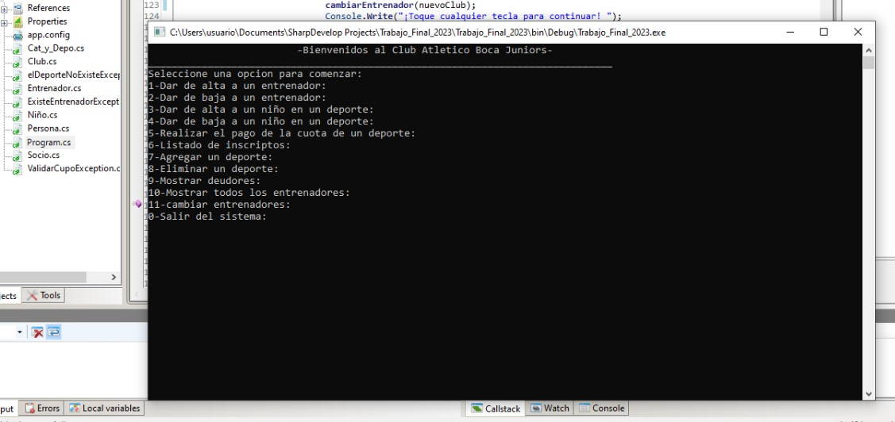

Pagina web para iglesia

Desarrollé y diseñé una página web dinámica y funcional para una iglesia local, proporcionando una plataforma digital que refleja la identidad y valores de la comunidad religiosa. Integré elementos visuales atractivos, información relevante sobre eventos y servicios, así como funcionalidades interactivas para mejorar la experiencia del usuario. La página web sirve como un recurso informativo y de conexión para los miembros de la congregación, así como para aquellos que buscan información sobre la iglesia y sus actividades.
Interfaz en C#
Desarrollé un programa en C# que ofrece una interfaz intuitiva y eficiente para la organización de un club de deportes dedicado a niños. Este proyecto fue concebido para simplificar la gestión de actividades, inscripciones de participantes, programación de eventos y seguimiento de progreso dentro del club.
Este proyecto académico fue concebido para simplificar la gestión de actividades, inscripciones de participantes, programación de eventos y seguimiento de progreso dentro del club i contribución incluyó el diseño y desarrollo del software, garantizando su funcionamiento óptimo y adaptabilidad a las necesidades específicas del club y sus usuarios.